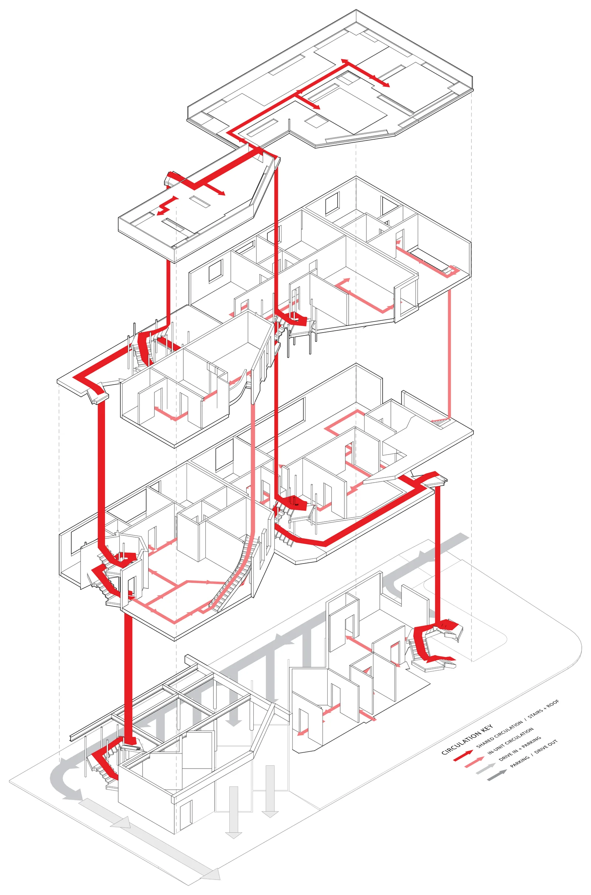
Circulation · Exploded Axon Click to inspectLow-Rise Lab
The Missing Middle · W 35th St × S Catalina St · Los Angeles · 2026
Students are loud. They throw parties, keep strange hours, and most of them are still figuring out how to live on their own. Families need the opposite. This studio asked for missing-middle housing on one single-family lot near USC, and my goal was to let students and families share that lot without wrecking each other's week.
So the building keeps them apart where it matters. Every entrance belongs to one home or leads up to the roof, so nobody walks past your door to get to theirs, and the student rooms are planned so their noise stays on their side. Where the two groups do meet is on purpose: the big green roof that everyone shares.
Circulation was the heart of the project. Red steel stairs climb the outside of both blocks and cross between them, so you can get from any apartment to any other, and coming home turns into a walk up through the building instead of down a hallway.
Parking was the other big move. The brief only asked for two stalls; I fit seven, including two tandem spots meant for the families, so one household can park two cars or a neighbour can borrow a spare spot. The drive runs straight through: pull in on one side, park or drop someone off, and leave on the other, which also makes it an easy pick-up spot for Ubers and Lyfts. To clear the drive, House 1 sits up on a steel girder.
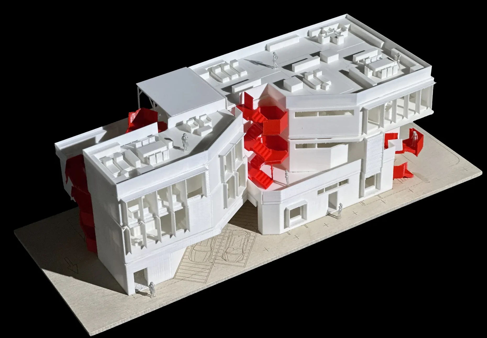
Site Model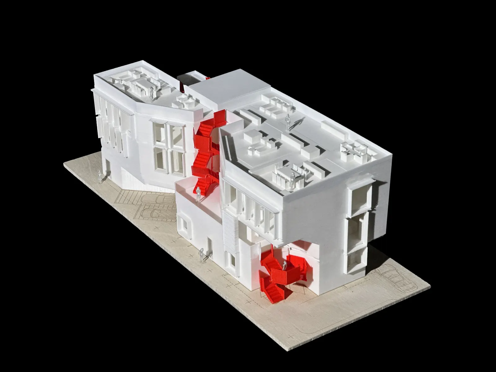
Street Corner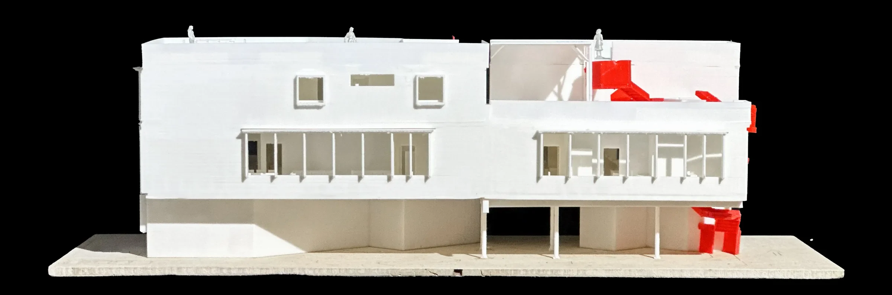
Long Elevation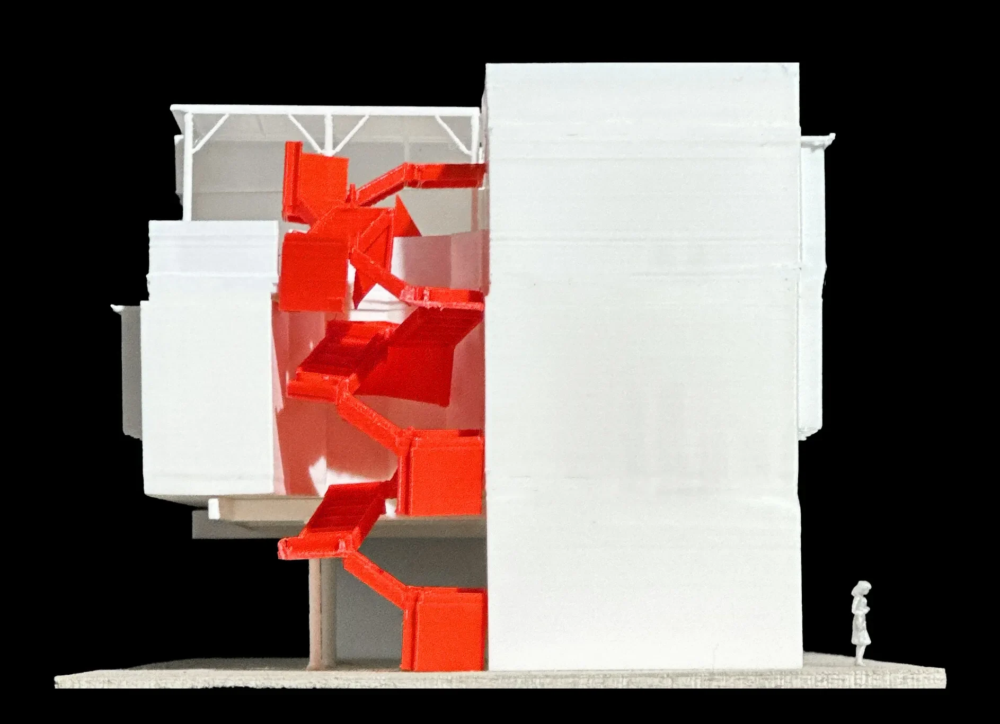
Side Elevation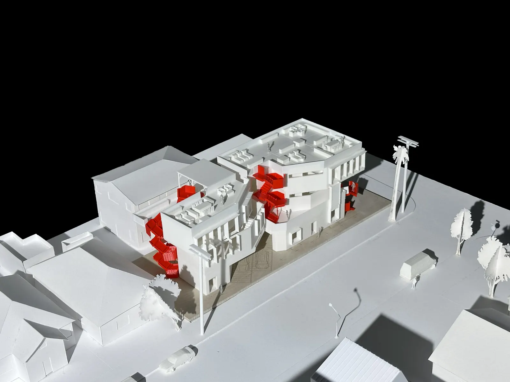
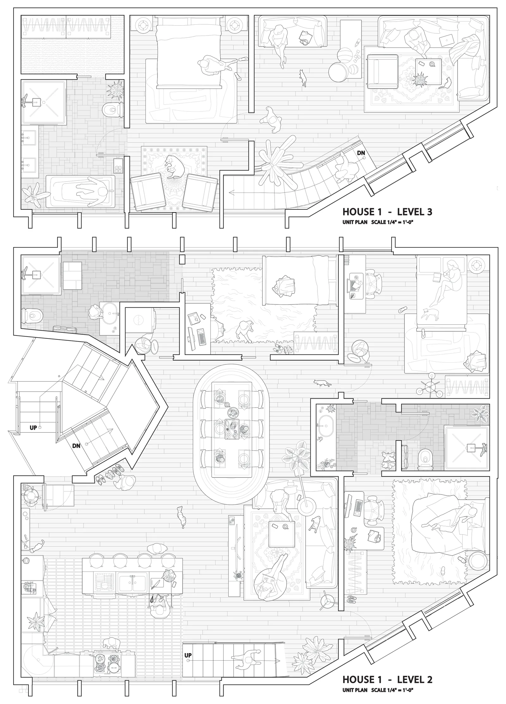
House 1 · Unit Plan Click to inspect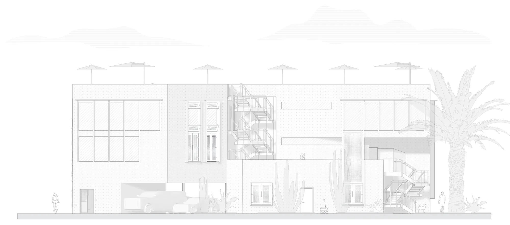
Street Elevation Click to inspect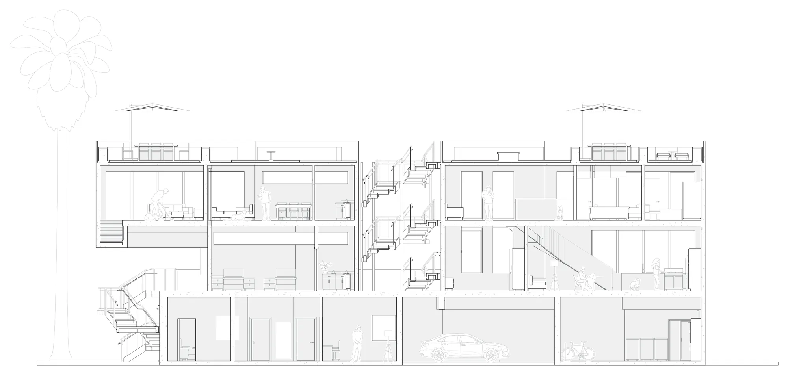
Long Section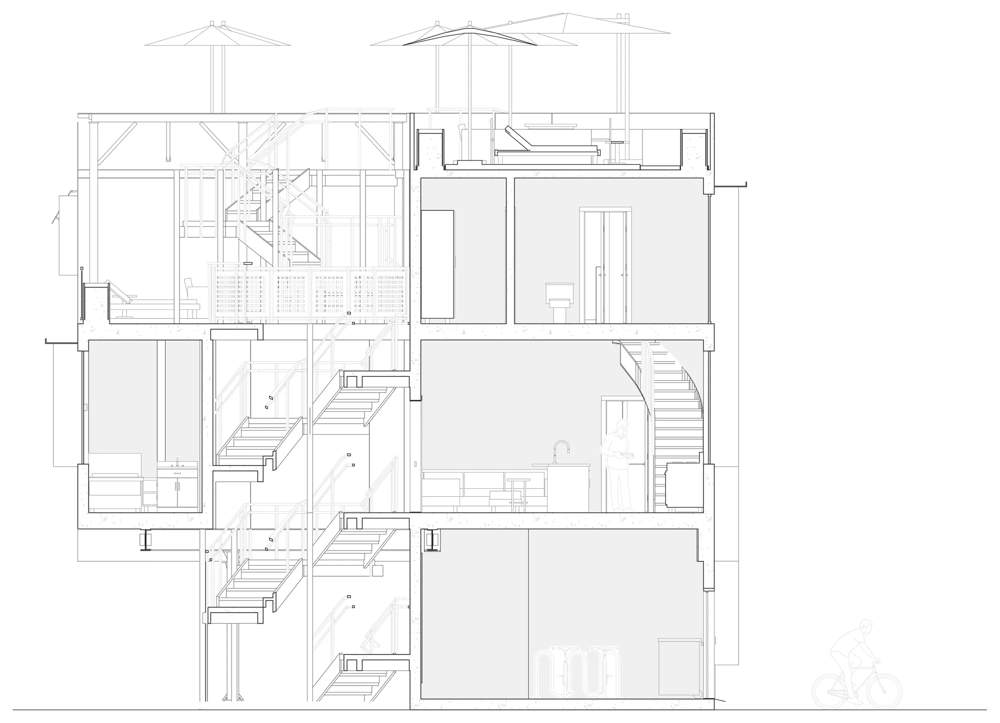
Short Section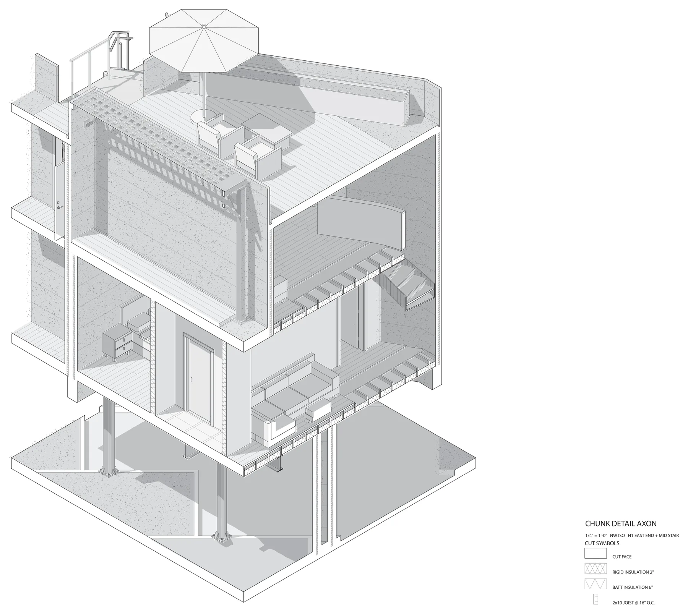
Chunk Detail Axon Click to inspect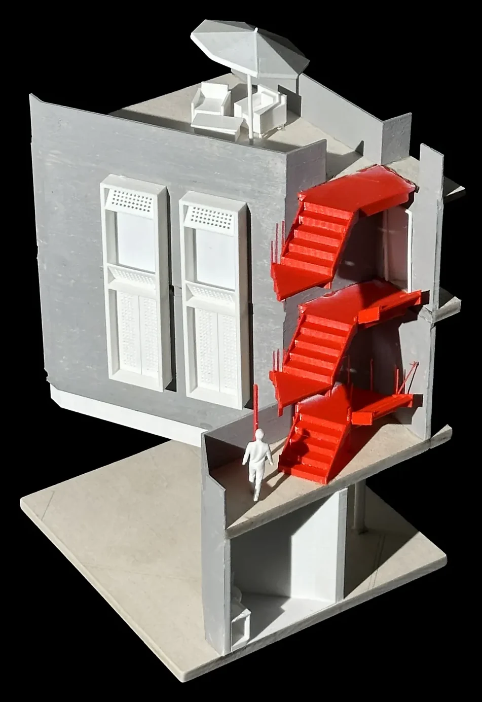
Stair Side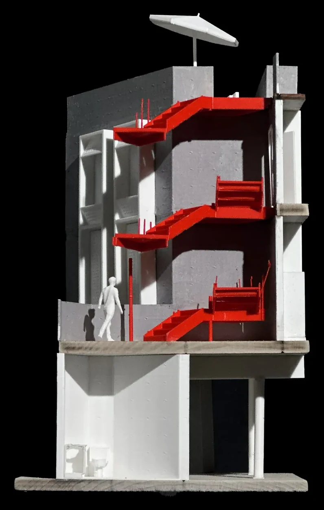
Cut Face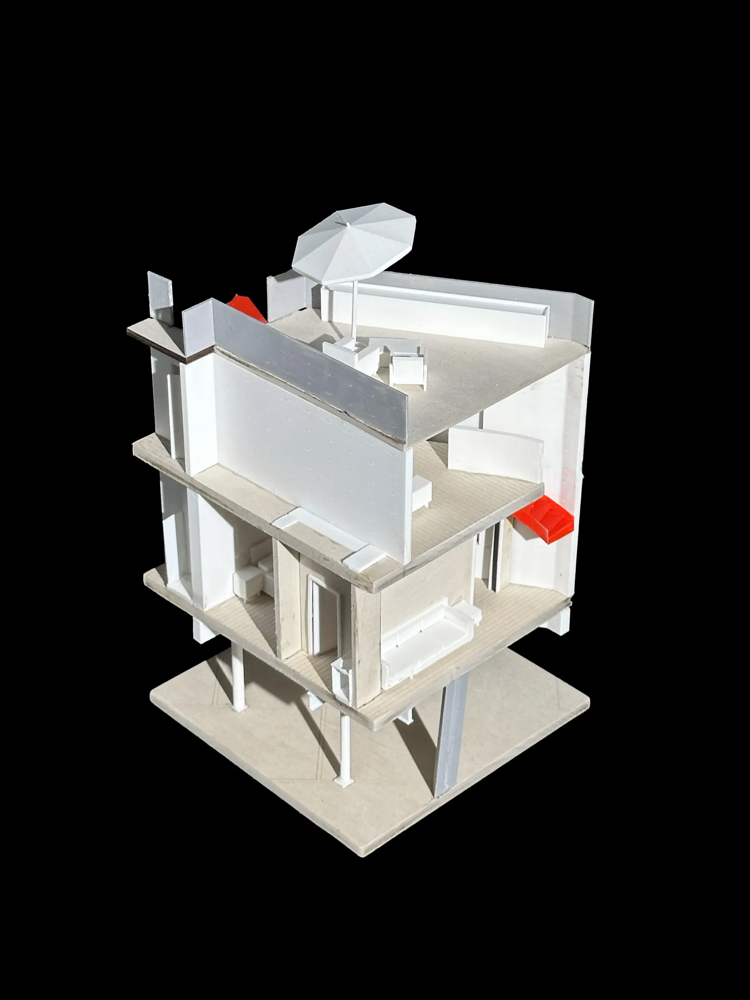
Back Corner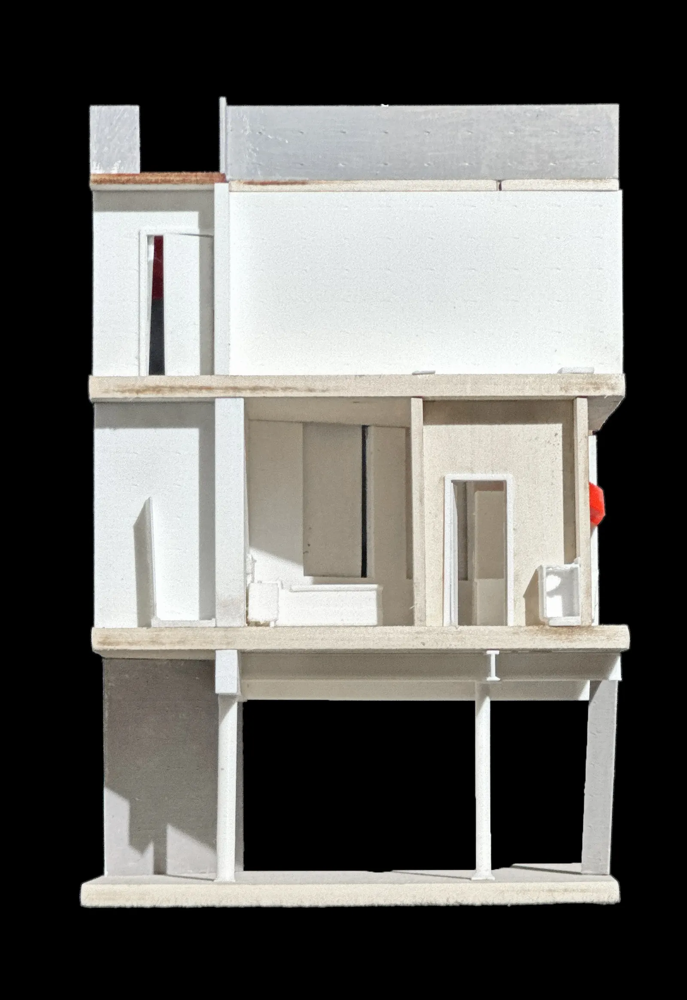
Section Elevation